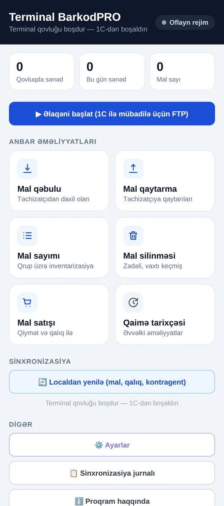
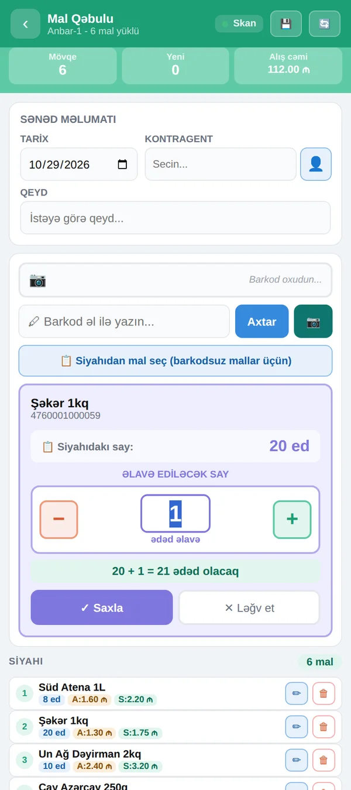

Mal qəbulu
Təchizatçıdan gələn mal: say, qiymət, kontragent.
BarkodPRO / Həllər / Anbar Terminal
Android telefon və məlumat toplama terminalları üçün anbar proqramı. Mal qəbulu, sayım, qaytarma, silinmə və satış — kağızsız və təkrar daxiletməsiz, birbaşa 1C-yə.


Anbarçı malı əlində tutduğu anda sənəd hazırlanır. Ofisdə qaiməni yenidən 1C-yə yığmağa ehtiyac qalmır.
Daxili skaner, yan düymə və ya telefon kamerası ilə.
Mal dərhal tapılır: ad, qiymət, say. Təkrar oxuma sayı artırır.
Bir toxunuşla təsdiq. Şəbəkə yoxdursa, sənəd növbədə gözləyir.
Sənəd 1C-də avtomatik yaranır — əlavə daxiletmə yoxdur.
Lazım olanları aktiv edir, iş prosesinizə uyğun qururuq.
Təchizatçıdan gələn mal: say, qiymət, kontragent.
Təchizatçıya qaytarılan mallar ayrıca sənəddə.
Qrup üzrə sayım, sistem qalığı ilə müqayisə.
Zədəli və vaxtı keçmiş mallar.
Qiymət və qalığı görərək satış sənədi.
Əvvəlki sənədlər, qaralamalar, göndərilməyənlər.
Nağd, kart və bank ödənişləri.
Satış, kassa, tədarükçü, kontragent borcları.
Böyük düymələr, aydın rənglər, bir əllə iş. Tələsik işləyəndə də səhv az olur. Ekrana toxunub böyüdün.
Barkodu oxudun — mal adı, alış və satış qiyməti dərhal görünür. Eyni mal yenidən oxunanda proqram sayı artırır və ya soruşur.
Bütün anbarı yox, lazım olan qrupu seçib sayın. Hər oxuma +1 edir; sistem qalığı, sayılan miqdar və fərq yan-yana görünür.
Əlinizdəki cihazla başlayın. Böyüdükcə peşəkar terminallara keçin — proqram eyni qalır.
Zirzəmi anbarlarda, uzaq obyektlərdə və zəif Wi-Fi olan yerlərdə də işləyir. Göndərilməmiş sənəd itmir.
1C ilə birbaşa bağlantı. Mallar, qalıqlar və kontragentlər canlı yüklənir.
Sənədlər cihazdakı qovluğa yazılır, mal və qalıq faylları oradan avtomatik oxunur.
Terminal ilə 1C arasında faylların avtomatik mübadiləsi — şəbəkəsi qeyri-sabit anbarlar üçün.
Quraşdırmadan əvvəl bilməli olduğunuz hər şey bir cədvəldə.
| Cihazlar | Android telefonlar və daxili skaneri olan məlumat toplama terminalları |
|---|---|
| Barkod oxuma | Daxili skaner, proqrama öyrədilən yan düymə, kamera (fənər ilə) |
| 1C ilə əlaqə | HTTP servis (onlayn), fayl qovluğu (oflayn), FTP mübadilə |
| Oflayn iş | Sənədlər cihazda saxlanır və bağlantı bərpa olunanda göndərilir |
| Dillər | Azərbaycan, rus, türk, ingilis |
| Təhlükəsizlik | PIN kod, hər cihaz üçün lisenziya; parol ayar faylına yazılmır |
| Ehtiyat nüsxə | Avtomatik ehtiyat; ayarları fayla saxlama və geri yükləmə |
| Məxfilik | Reklam, izləmə və analitika yoxdur; kamera yalnız barkod üçündür |
Cavabını tapmadığınız sual varsa, WhatsApp-a yazın.
Android əsaslı məlumat toplama terminallarında və adi Android telefonlarda. Telefonda barkod kamera ilə oxunur.
Terminal 1C-yə HTTP servis və ya fayl/FTP mübadiləsi ilə qoşulur və konfiqurasiyanıza uyğunlaşdırılır. Mövcud sistemi dəyişmək lazım deyil.
Sənədlər cihaz yaddaşına yazılır, mal və qalıq məlumatları oradan oxunur. Bağlantı qayıdanda sənədlər 1C-yə göndərilir.
Mal qəbulunda yeni malı terminalda yaratmaq olur: ad, barkod, alış və satış qiyməti. Sənəd göndəriləndə mal 1C-də də yaranır.
Qiymət cihaz sayına və 1C bazanızın quruluşuna görə hesablanır. Yazın — demo göstərək və təklif hazırlayaq.
Cihazınızda canlı demo göstərək: öz mallarınızla qəbul və sayım edin, sənədin 1C-yə necə düşdüyünü görün.